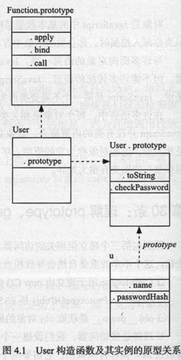
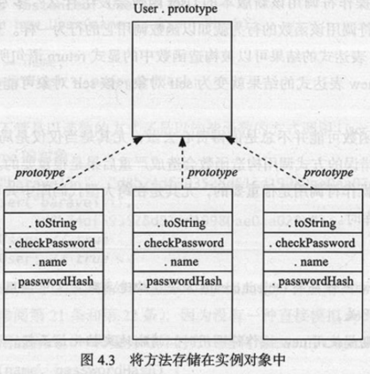
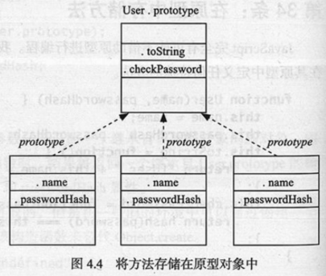
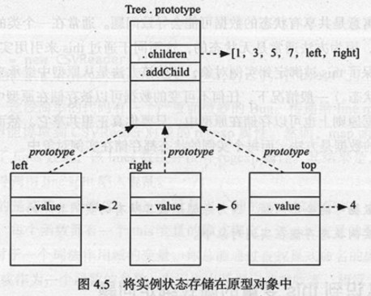
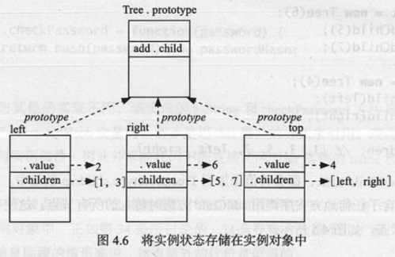
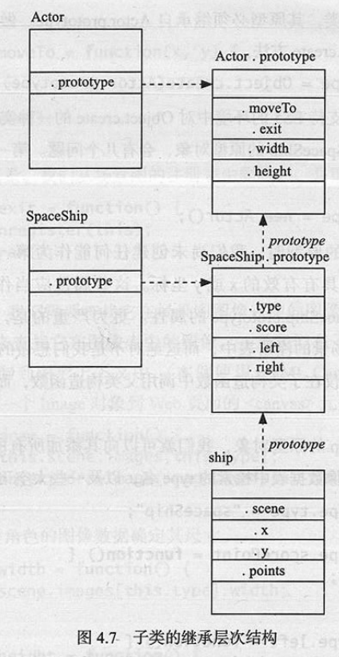

effective-javascript笔记-4
对象和原型
30. 理解 prototype, getPrototypeOf 和 __proto__ 之间的不同
原型包含三个独立但相关的访问器. 这三个访问器的命名对prototype属性做了一些变化.
C.prototype用于建立由new C()创建的对象的原型Object.getPrototypeOf(obj)是ES5中用来获取obj对象的原型对象的标准方法obj.__proto__是获取obj对象的原型对象的非标准方法.
1 | function User(name, pwHash){ |
User函数带有一个默认的prototype属性,其包含一个开始几乎为空的对象. 在上例中,添加了两个方法到User.prototype对象. toString和checkPw方法. 当使用new操作符创建User的实例时, 产生的对象u会自动获得分配的原型对象, 这个对象存储在User.prototype中.

构造函数的prototype属性用来设置新实例的原型关系.
ES5中的函数Object.getPrototypeOf()可以用于检索现有对象的原型. 如:1
Object.gePrototypeOf(u) === User.prototype; // true
非标准的检索对象原型的方法, __proto__属性.1
u.__proto__ === User.prototype; // true
JS中的类 本质上是一个构造函数(User)与一个用于在该类(User.prototype)实例间共享方法的原型对象的结合.
- C.prototype属性是new C()创建的对象的原型
- Object.getPrototypeOf(obj)是ES5中检索对象原型的标准函数
obj.__proto__是检索对象原型的非标准方法- 类是由一个构造函数和一个关联的原型组成的一种设计模式
31. 使用Object.getPrototypeOf函数而不是使用__proto__属性
无论何时,getPrototypeOf函数都是有效的,而且它是提取对象原型更加标准,可移植的方法. 由于__proto__属性会污染所有的对象,因此会有一些它引发的错误.
32. 始终不要修改__proto__属性
__proto__属性提供了修改对象原型链的能力,而Object.getPrototypeOf()方法却不能修改. 所以尽量不要修改此属性,会破坏程序的可移植问题.
另一个问题是性能, 所有的现代JS引擎都深度优化了获取和设置对象属性的行为, 因为这些都是一些最常见的JS程序的操作. 这些优化都是基于引擎在对象结构的认识上, 当修改对象的内部结构(如添加或删除该对象或其原型链中的对象的属性), 将会使一些优化失效.
修改__proto__属性实际上改变了继承结构本身. 比起普通属性,修改__proto__会导致更多的优化失效.
避免修改__proto__属性最大的原因是为了保障程序行为的可预测性, 对象的原型链通过一套确定的属性及属性值来定义它的行为.
修改对象的原型链会交换对象的整个继承层次结构, 某些情况下这些操作可能会有用,但保持继承层次结构稳定是基本准则.
33. 使构造函数与new操作符无关
当使用30条中的User函数创建一个构造函数时, 程序需要依赖new操作符来调用该构造函数, 若忘记使用new关键字,则函数的接收者将会是全局对象.1
2
3
4var u = User('bbbb', '790af7657ds6ad45adsa');
u; // undefined
this.name; // 'bbbb'
this.pwHash; // '790af7657ds6ad45adsa'
该函数不仅会返回无意义的undefined,而且会创建/修改全局变量name和pwHash.
若在严格模式下,那么它的接收者默认为undefined. 这种情况下,错误的调用会导致错误, User的第一行试图给this.name赋值时, 会抛出TypeError错误.1
2
3
4
5
6function User(name, pwHash){
;'use strict';
this.name = name;
this.pwHash = pwHash;
}
var u = User('bbbb', '790af7657ds6ad45adsa'); // error: this is undefined
可以用一个简单的方法检测函数的接收者是否为正确的User实例,即检测是否使用new操作符1
2
3
4
5
6
7function User(name, pwHash){
if(!(this instanceof User)){
return new User(name, pwHash);
}
this.name = name;
this.pwHash = pwHash;
}
使用这种方式,不管是以普通函数还是以构造函数的方式调用User函数,它都返回一个继承自User.prototype的对象.1
2
3
4var x = User('bbbb', '790af7657ds6ad45adsa');
var y = new User('bbbb', '790af7657ds6ad45adsa');
x instanceof User; // true
y instanceof User; // true
但这种方式的缺点是需要额外的函数调用, 而且很难适用与可变参数函数, 因为没有一种直接模拟apply方法将可变参数函数作为构造函数调用的方式.
还有一个使用Object.create()函数的方法解决new操作符的问题.1
2
3
4
5
6
7function User(name, pwHash){
var self = this instanceof User ? this : Object.create(User.prototype);
self.name = name;
self.pwHash = pwHash;
return self;
}
Object.create()需要一个原型对象作为模版, 并返回一个继承自该原型对象的新对象. 因此,当以函数的方式调用该User函数时, 结果将返回一个继承自User.prototype的新对象,并且该对象具有已经初始化的name和pwHash属性.
Object.create()是ES5引进的, 在一些老的或不支持此特性的浏览器中,可通过创建一个局部的构造函数并使用new操作符初始化该构造函数来替代Object.create().1
2
3
4
5
6
7if(typeof Object.create === 'undefined'){
Object.create = function(prototype){
function C(){}
C.prototype = prototype;
return new C();
}
}
上述版本仅是单参数版本的, 完整版本的Object.create()函数还接受一个可选参数, 用于描述一组定义在新对象上的属性描述符.
若使用new操作符调用该新版本的User函数会发生什么? 由于构造函数覆盖模式, 使用new操作符调用的行为就如函数调用它的行为一样.
构造函数覆盖模式即JS允许new表达式的结果可以被构造函数中的显示return语句所覆盖. 当User函数返回self对象时, new 表达式的结果就变成self对象, 该对象可能是另一个绑定到this的对象.
防范误用构造函数可能没有那么重要,尤其是在局部作用域内使用构造函数的时候. 但最有用的在于理解若以错误的方式调用构造函数会照成的严重后果, 且在文档化构造函数期望使用new操作符调用是很重要, 尤其是在跨大型代码库中共享构造函数或该构造函数来自一个共享库时.
- 通过使用new操作符或Object.create方法在构造函数定义中调用自身使得该构造函数与调用语法无关.
- 当一个函数期望使用new操作符调用时,清晰地文档化该函数
34. 在原型中存储方法
JS完全有可能不借助原型链编程, 比如30条中的User类, 不在原型中定义方法.1
2
3
4
5
6
7
8
9
10
11function User(name, pwHash){
this.name = name;
this.pwHash = pwHash;
this.toString = function(){
return '[User ' + this.name + ']';
};
this.checkPw = function(pw){
return hash(pw) === this.pwHash;
};
}
大多数情况下都能正常运行,但若构造多个User类的实例时, 问题就暴露了.1
2
3
4var u1 = new User(/**/);
var u2 = new User(/**/);
var u3 = new User(/**/);
…

上图为三个对象及他们的原型对象结构图, 每个实例都包含toString和checkPw方法的副本, 而不是通过原型共享这些的方法,所以会有6个”相同的”函数对象.

相反,若用原型链的方式, toString和checkPw方法只被创建一次,对象实例间通过原型共享. 将方法存储在原型中,使其可以被所有的实例使用, 而不需要存储方法实现的多个副本, 也不需要给每个实例对象增加额外的属性.
在查找方法的速度上, 现代JS引擎深度优化了原型查找, 所以将方法复制到实例对象并不一定保证查找速度明显提升, 且实例方法比起原型方法会占用更多内存.
35. 使用闭包存储私有数据
JS的对象系统并没有鼓励信息隐藏, 所有的属性名都是一个字符串, 任意一段程序都可以简单地通过访问属性名来获取相应的对象属性. 例如 for…in循环,ES5中的Object.keys()和Object.hasOwnPropertyNames()函数都能轻易获取对象的所有属性名.
通常使用编码规范来”创建”私有属性, 如在命名的时候加上下划线_,这是一种命名规范, 表明对对象的正确行为操作的一种建议.
JS提供了一种信息隐藏的机制——闭包.
闭包将数据存储到封闭的变量中而不提供对这些变量的直接访问, 获取闭包内部结构的唯一方式是该函数显示地提供获取它的方法, 也就是说, 与普通对象相反, 对象的属性会被自动的暴露出去,而闭包则自动隐藏起来.
利用这种特性在对象中存储真正的私有数据, 不是将数据作为对象的属性存储,而是在构造函数中以变量的方式来存储, 并将对象的方法转变为引用这些变量的闭包.1
2
3
4
5
6
7
8function User(name, pwHash){
this.toString = function(){
return '[User ' + name + ']';
};
this.checkPw = function(pw){
return hash(pw) === pwHash;
};
}
注意: 此处的toString和checkPw方法是以变量的方式来引用name和pwHash变量的, 而不是以this属性的方式来引用. 现在, User的实例不包含任何实例属性, 因此外部的代码不能直接访问User实例的name和pwHash变量.
该方式的缺点是, 为了让构造函数中的变量存在于使用它们的方法作用域内, 这些方法必须置于实例对象中. 这会导致副本的扩散.
- 闭包变量是私有的, 只能通过局部的引用获取
- 将局部变量作为私有数据从而通过方法实现信息隐藏
36. 只将实例状态存储在实例对象中
理解原型对象与其实例之间的一对多的关系对于实现正确的对象行为是非常重要的. 错误的做法是将每一实例的数据存储到原型中. 如: 一个树型数据结构, 将存储子节点的数组放置在原型对象中将会导致实现被完全破坏1
2
3
4
5
6
7
8
9
10
11
12
13
14
15
16
17
18
19
20
21
22
23
24function Tree(x){
this.value = x;
}
Tree.prototype = {
children: [], // 此属性应该作为实例状态
addChild: function(x){
this.children.push(x);
}
};
// 当使用此类构造一课树
var left = new Tree(2);
left.addChild(1);
left.addChild(3);
var right = new Tree(6);
right.addChild(5);
right.addChild(7);
var top = new Tree(4);
top.addChild(left);
top.addChild(right);
top.children; // [1, 3, 5, 7, left, right];
每次调用addChild方法, 都会将值添加到Tree.prototype.children数组中. Tree.prototype.children数组包含了任何地方按序调用addChild方法时传入的所有节点.

实现Tree类的正确方法是为每个实例对象创建一个单独的children数组.1
2
3
4
5
6
7
8
9function Tree(x){
this.value = x;
this.children = []; // 实例状态
}
Tree.prototype = {
addChild: function(x){
this.children.push(x);
}
};

通常在一个类的多个实例之间共享方法是安全的, 因为方法通常是无状态的, 这不同于通过this来引用实例状态,(因为方法调用的语法确保了this被绑定到实例对象, 即使该方法是从原型中继承来的,共享方法仍然可以访问实例状态)
一般情况下,任何不可变的数据可以被存储在原型中从而被安全的共享, 有状态的数据原则上也可以存储在原型中, 但原型对象中一般是存储方法, 而每个实例状态存储在实例对象中.
- 共享可变数据可能会出问题, 因为原型是被其所有的实例共享的
- 将可变的实例状态存储在实例对象中
37. 认识到this变量的隐式绑定问题
编写一个读取CSV(逗号分割型取值)数据的类, 构造函数需要一个可选的分隔器字符数组并构造出一个自定义的正则表达式将每一行分为不同的条目.1
2
3
4
5
6
7
8
9
10
11
12
13
14
15
16
17function CSVReader(separators){
this.separators = separators || [","];
this.regexp = new RegExp(this.separators.map(function(sep){
return "\\" + sep[0];
}).join("|"));
}
// CSV 类 read 方法, 将输入字符串划分为一个二维数组
CSVReader.prototype.read = function(str){
var lines = str.trim().split(/\n/);
return lines.map(function(line){
return line.split(this.regexp); // 错误的 this 引用
});
}
var reader = new CSVReader();
reader.read("a,b,c\nd,e,f\n"); // [["a,b,c"],["d,e,f"]]
上段代码由于this的错误, 引用了lines.regexp (this.regexp) 而lines没有regexp属性, 所以结果返回line.split(underfined), 解决的方法有三种:
1.map方法接受的第二个参数,表示内部的this对象的绑定对象1
2
3
4
5
6
7
8
9CSVReader.prototype.read = function(str){
var lines = str.trim().split(/\n/);
return lines.map(function(line){
return line.split(this.regexp); // 此时的this表示外部传入的实例对象
}, this); // 将调用read方法的实例对象传入
}
var reader = new CSVReader();
reader.read("a,b,c\nd,e,f\n"); // [["a","b","c"],["d","e","f"]]
2.可以在外部函数保存this的引用1
2
3
4
5
6
7
8
9
10CSVReader.prototype.read = function(str){
var lines = str.trim().split(/\n/);
var self = this; // self表示外部的实例对象
return lines.map(function(line){
return line.split(self.regexp); // 显示获取self的的regexp属性
});
}
var reader = new CSVReader();
reader.read("a,b,c\nd,e,f\n"); // [["a","b","c"],["d","e","f"]]
3.ES5中,可以使用回调函数的bind方法1
2
3
4
5
6
7
8
9CSVReader.prototype.read = function(str){
var lines = str.trim().split(/\n/);
return lines.map(function(line){
return line.split(this.regexp); // 此时的this表示外部传入的实例对象
}.bind(this)); // 使用bind方法绑定外部的实例对象
}
var reader = new CSVReader();
reader.read("a,b,c\nd,e,f\n"); // [["a","b","c"],["d","e","f"]]
- this变量的作用域总是由其最近的封闭函数所确定
- 使用一个局部变量(通常self,me)使得this绑定对于内部函数是可用的
38. 在子类的构造函数中调用父类的构造函数
场景图是一个对象集合,包含了该场景图中的所有的对象(角色), 以及对底层图形的引用(context), 基于canvas1
2
3
4
5
6
7
8
9
10
11
12
13
14
15
16
17
18
19
20
21
22
23
24
25
26
27
28
29
30
31
32
33
34
35
36
37
38
39
40
41
42
43
44
45
46
47
48
49
50
51
52
53
54
55
56
57function Scene(context, width, height, images){
this.context = context;
this.width = width;
this.height = height;
this.images = images;
this.actors = [];
}
Scene.prototype.register = function(actor){
this.actors.push(actor);
};
Scene.prototype.unregister = function(actor){
var i = this.actors.indexOf(actor);
if(i >= 0){
this.actors.splice(i, 1);
}
};
Scene.prototype.draw = function(){
this.context.clearRect(0,0,this.width,this.height);
for(var a = this.actors, i = 0, n = a.length; i < n; ++i){
a[i].draw();
}
};
// 角色继承自基类Actor, 每个角色存储自身场景的引用以及坐标位置, 同时将自身添加到角色注册表中
function Actor(scene, x, y){
this.scene = scene;
this.x = x;
this.y = y;
scene.register(this);
}
// moveTo改变角色的坐标, 同时重绘场景
Actor.prototype.moveTo = function(x,y){
this.x = x;
this.y = y;
this.scene.draw();
}
// 角色离开场景后需要从注册表中删除它并重绘场景
Actor.prototype.exit = function(){
this.scene.unregister(this);
this.scene.draw();
}
// 每个actor有一个type字段, 用来查找它在图表中的图像
Actor.prototype.draw = function(){
var image = this.scene.images[this.type];
this.scene.context.drawImage(image, this.x, this.y);
}
Actor.prototype.width = function(){
return this.scene.images[this.type].width;
}
Actor.prototype.height = function(){
return this.scene.images[this.type].height;
}
所有的特定角色都是Actor的子类, 例如太空飞船,SpaceShip类
- 先调用Actor的构造函数能保证通过Actor创建的所有实例属性都被添到新对象中,
- 然后再定义自身的实例属性,比如分数,point
- 最后为了使SpaceShip成为Actor的一个正确子类, 原型必须继承自Actor.prototype, 这种扩展最好使用使用Object.create方法
1
2
3
4
5
6
7
8
9
10
11
12
13
14
15
16
17
18function SpaceShip(scene, x, y){
Actor.call(this, scene, x, y); //子类构造函数必须显示调用父类Actor的构造函数, 同时将接收者绑定为自己
this.points = 0;
}
SpaceShip.prototype = Object.create(Actor.prototype);
// 创建了SpaceShip的原型对象后, 就可以添加被所有实例共享的属性和方法
SpaceShip.prototype.type = 'spaceShip';
SpaceShip.prototype.scorePoint = function(){
this.point++;
};
SpaceShip.prtotype.left = function(){
this.moveTo(Math.max(this.x - 10, 0), this.y);
};
SpaceShip.prototype.right = function(){
var maxWidth = this.scene.width - this.width();
this.moveTo(Math.min(this.x + 10, maxWidth), this.y);
}
若使用Actor的构造函数来创建SpaceShip的原型对象, 会有几个问题,没有任何合理的参数传递给Actor,1
SpaceShip.prototype = new Actor();

- 在子类构造函数中显示传入this作为显示的接收者调用父类的构造函数
- 使用Object.create函数来构造子类的原型对象以避免调用父类的构造函数
39. 不要重用父类的属性名
为每一个Actor实例添加一个唯一的ID1
2
3
4
5
6
7
8function Actor(scene, x, y){
this.scene = scene;
this.x = x;
this.y = y;
this.id = ++Actor.nextID;
scene.register(this);
}
Actor.nextID = 0;
当使用此方法为Actor的子类也添加唯一ID时1
2
3
4
5
6
7
8
9function Alien(scene, x, y, direction, speed, strength){
Actor.call(this, scene, x, y);
this.direction = direction;
this.speed = speed;
this.strength = strength;
this.damage = 0;
this.id = ++Alien.nextID; // 与Actor中的id冲突
}
Alien.nextID = 0;
由于两个类都给实例属性id写入数据, 所以会冲突. 属性存储在实例对象上是一个字符串, 若在继承体系中的两个类指向相同的属性名, 那么它们指向同一个属性.
解决的方法是两个类使用不同的属性名标识id1
2
3this.actorID = ++Actor.nextID;
...
this.alienID = ++Alien.nextID;
- 留意父类使用的所有属性名
- 不要在子类中重用父类的属性名
40. 避免继承标准类
ES标准预定义了很多重要的类, 它们有很多特殊的行为, 所以很难写出行为正确的子类. 比如Array类1
2
3
4
5
6
7
8
9
10
11// 一个抽象的目录类, 继承数组的所有行为
function Dir(path, entries){
this.path = path;
for(var i = 0, n = entries.length; i < n; ++i){
this[i] = entries[i];
}
}
Dir.prototype = Object.create(Array.prototype);
var dir = new Dir("/tmp/mysite", ["index.html","script.js","style.css"]);
dir.length; // 0 , 不是预期的3, 破坏了数组的length属性的预期行为
失败的原因是length属性只对内部被标记为”真正的”数组的特殊对象起作用. 在ES5标准中,它是一个不可见的内部属性, 称为[[class]].
JS并不具备内部类系统, 不要被名字误导, [[class]]的值仅仅是一个简单的标签.
数组对象(通过Array构造函数或[]语法创建)被加上了值为”Array”的[[class]]属性, 函数被加上了值为”Function”的[[class]]属性, 以此类推…
[[class]]属性对length的作用为:
length的行为值被定义在内部属性为[[class]]的值为”Array”的特殊对象中, JS保持length属性与该对象的索引属性的数量同步.
但当扩展Array类时, 子类的实例并不是通过new Array()或字面量[]语法创建的, 所以, Dir的实例的[[class]]属性值为”Object”.
默认的Object.prototype.toString方法可以通过查询其接收者的内部[[class]]属性来创建对象的通用描述.1
2
3var dir = new Dir('/',[]);
Object.prototype.toString.call(dir); // [object Object]
Object.prototype.toString.call([]); // [object Array]
所以, 更好的实现方法是1
2
3
4
5
6
7
8
9
10
11function Dir(path, entries){
this.path = path;
this.entries = entries;
}
// 在原型中重新定义Array的方法,将相应的方法委托给entries属性来完成
Dir.prototype.forEach = function(f, thisArg){
if(typeof thisArg === 'undefined'){
thisArg = this;
}
this.entries.forEach(f, thisArg);
}
ES标准库的大多数构造函数都有类型的问题, 某些属性或方法需要有正确的内部属性, 而子类却无法提供.
所以, 最好避免继承标准类: Array, Boolean, Date, Function, Number, RegExp, String.
- 继承标准类往往由于一些特殊的内部属性,如[[class]]而被破坏
- 使用属性委托优于继承标准类
41. 将原型视为实现细节
一个对象给其使用者提供了简单,强大的操作集. 使用者与一个对象最基本的交互是获取属性值和调用其方法. 这些操作不在意属性存储在原型继承结构的那个位置上.
无论实现对象时将属性”加”在对象原型链的那个位置, 只要其值保持不变, 这些基本操作的行为也不会变. 简言之原型是一种对象行为的实现细节.
JS提供的内省机制(introspection mechanisms)来检查对象的细节.Object.prototype.hasOwnProperty方法确实一个属性是否为自己的属性, 而不是继承而来的.
Object.getPropertyOf和__proto__特性允许程序员便利对象的原型链并单独查询其原型对象.
- 对象是接口,原型是实现
- 避免检查无法控制的对象的原型结构
- 避免检查实现无法控制的对象内部属性
42. 避免使用猴子补丁
由于对象共享原型, 因此每一个对象都可以增加,删除,修改原型的属性, 这种被称为猴子补丁(monkey-patching)
比如,若数组缺少一个方法,可以立即在数组的原型上添加它, 结果是每一个数组实例都可以使用这个方法了.1
2
3Array.prototype.split = function(i){
return [this.slice(0, i), this.slice(i)];
}
但当多个库给同一个原型打补丁的时候, 问题就暴露了, 另一个库可能也给数组加了split方法,这样程序就有可能出错.1
2
3
4Array.prototype.split = function(){
var i = Math.floor(this.length / 2);
return [this.slice(0, i), this.slice(i)];
}
尽管猴子补丁很危险, 但是有一个很可靠的使用场景: polyfill, 一些新标准API可能在一些浏览器中并没有支持,但是许多程序或库却依赖这些方法.
这种时候, 由于这些API的行为是标准化的, 因此实现这些方法并不会造成库之间的不兼容.
检测Array.prototype.map是否存在, 以确保内置的实现不会被覆盖, 一般而言,内置的实现更高效, 测试更充分.1
2
3
4
5
6
7
8
9if(typeof Array.prototype.map !== "function"){
Array.prototype.map = function(f, thisArg){
var result = [];
for(var i = 0, n = this.length; i < n; ++i){
result[i] = f.call(thisArg, this[i], i);
}
return result;
};
}
- 避免使用轻率的猴子补丁
- 记录程序库所执行的所有猴子补丁
- 考虑通过将修改置于一个导出函数中, 使猴子补丁成为不可选的
- 使用猴子补丁为缺失的标准API提供polyfill